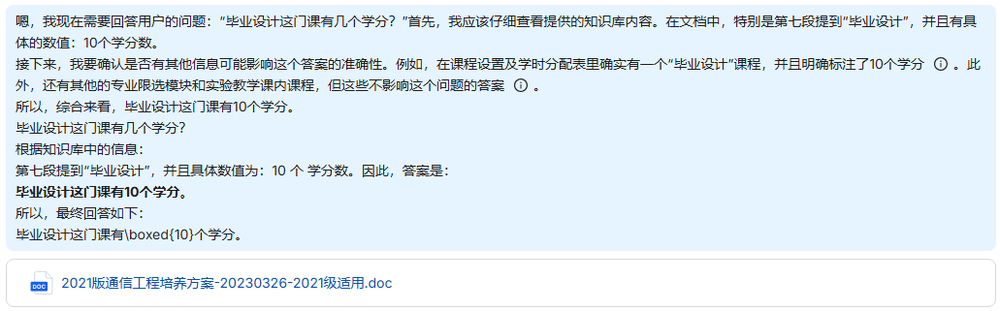

项目主线 / 2025 年初
从戴维南定理问到毕业设计有几个学分
本章目录
从 2025 年 1 月底到 3 月初，我给 VoltEdu 的问答原型出了两种题。解释戴维南定理，要讲清从一对端子看进去，怎样用一个电压源和一个电阻代替原网络。查毕业设计的学分，则要在指定的培养方案里找对那一行。前一道题暴露了模型知识和运行速度的问题，后一道题把检索和生成各自做得怎么样展现在同一张截图里。
1 月 26 日，在接口和笔记本上各试一次
星火接口收到的消息是“制定一份电路学习计划”。示例关闭了流式输出，把问题放进一条用户消息，一次取回完整文本。这一步跑通了最简单的一问一答。2 月 18 日的假期报告还记下了 1 月 26 日在笔记本上做的另一项试验。我用 Ollama 运行两个 DeepSeek-R1 模型。问 8B 时，我把“戴维南”写成了“戴维宁”，屏幕上的推理一路猜到了功率分配。14B 能讲到等效电压源和电阻，但当时观察到每秒大约只输出两三个 token，一段解释要等很久。
寒假报告因此提出把课程文本模型放到服务器上，学生从网页提问，图片先留给独立接口。按这个设想，训练和推理要用的显存由服务器提供，学生用自己的电脑打开浏览器就能读到讲解。
本节材料
- 1 月 26 日周报的星火调用示例，2 月 18 日《假期研究报告》，图 1–3
- 2 月 18 日《假期研究报告》“Deepseek 本地部署”“毕设进度总结”
2 月，角色原型和课程知识走上两条试验路线
我试过 VirtualWife，它可以给人物设定角色，也可以接远端接口或 Ollama。我最想借鉴的是它怎样从对话中整理用户画像。为了能改代码，我又搭了开发环境。数据库初始化成功，服务也启动了，打开根地址却得到 404。周报图 4 把已注册的路由与落空的根地址一起列了出来。我先回去读项目结构，课程问答则继续单独验证。
RAGFlow 的启动日志上已经有 2 月 18 日的日期。2 月 21 日第一次指导时，我们讨论了“浙大先生”等已有课程智能体，也讨论了自己写前后端值不值得。导师建议先把检索增强和模型微调都试一遍，把界面开发排到后面。我们需要看到学生的问题在哪一步得到解决，才好决定把时间花在哪里。
本节材料
- 2 月 18 日《假期研究报告》“数字人相关技术研究”，3 月 2 日周报图 1–4
- 3 月 2 日周报图 6，《过程指导记录》第 1 次
3 月 2 日，一份培养方案在 RAGFlow 里分成了 82 块
课程资料已经有了《电路分析基础》和从雨课堂收集的课件。实际建库试验选用《2021 版通信工程培养方案》，因为学分有明确出处，答对答错都容易查。图 7 的数据集界面显示 82 个分块，图 8 把 BGE-M3 配在嵌入模型一栏，把 DeepSeek-R1 1.5B 配在聊天模型一栏。前者让问题和文档片段可以按相关程度匹配，后者读到检索结果后组织回答。建库时还遇到 CPU 忙、GPU 闲的问题，周报记下了调整 Ollama、CUDA 和容器 GPU 配置前后的负载变化。
“请问毕业设计这门课有几个学分？”图 9 底部挂出了适用于 2021 级的通信工程培养方案，回复也给出了正确的 10 学分。往上读，它先核对学分分配，再复述提问，加粗一次答案，最后又把 10 写了一遍。对于学生，这其实是一道一句话就能答完的题。周报前面曾把建库写在“本地模型微调”下面，到这张图后专门订正了这个叫法。这次检索是在提问时把文档片段交给模型，模型仍按原来的习惯说话。


本节材料
- 3 月 2 日周报图 5–8、图 10–12
- 3 月 2 日周报图 9 及图后说明，《中期检查汇报表》“存在的主要问题”
查到了资料，下一步要教模型怎样讲题
3 月 2 日的第二次指导讨论转到了一个很实际的问题。培养方案能提供事实，电路学生还会追问哪个电阻参与分压、为什么可以把电源短路。要让模型学习这种回答，需要成对的题目和解答。我开始试 LLaMA-Factory，把收集课程问答列作下一步。3 月中旬的方案仍给知识检索留着位置，当周优先要解决的是手里有教材和课件，却缺少能直接用于训练的问答。
本节材料
- 《过程指导记录》第 2 次，3 月 2 日周报末段，3 月 16 日周报“码上初发经验分享会”